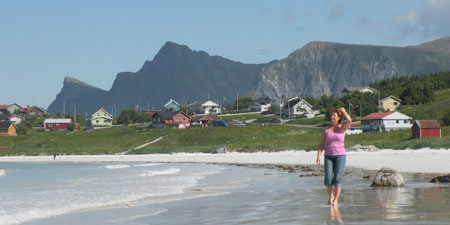

Om meg
Rigmor Sveen:
Jeg har jobbet tett på mennesker i alle faser av livet siden jeg var ferdigutdannet sykepleier på syttitallet. I alle disse årene har jeg hatt et genuint ønske om å bidra til at andre mennesker får et bedre liv. Gjennom mine mange utdanninger har jeg søkt noen svar. Det som etter hvert er blitt klart for meg er at svarene er å finne i hvert enkelt menneske. Min utfordring som terapeut sammen med klienten, er å utforske spørsmålene. Terapien kan bidra til at klienten får større innsikt i sin livssituasjon og flere valgmuligheter. Denne måten å arbeide på er meningsfull for meg, og gir meg energi.
Jeg er utdannet gestaltterapeut ved Norsk Gestaltinstitutt (privat høyskole i Oslo). Dette er et fireårig, halvtidsstudium.
- Har siden 2002 jobbet som gruppeterapeut med utdanning fra Diakonhjemmets Høgskolesenter i Oslo.
- Har jobbet innen flere områder, både innen spesialisthelsetjenesten, og innen den kommunale helsetjenesten.
- For tiden jobber jeg ved en klinikk for rusavhengige, og ved en sosialmedisinsk poliklinikk.
- Jeg er utdannet veileder ved Diakonhjemmets Høgskolesenter, og har jobbet som veileder individuelt for ledere (lederveiledning). Jeg jobber også som veileder for personalgrupper.
- Jeg er utdannet psykiatrisk sykepleier, og har jobbet i spesialisthelsetjenesten og i kommunehelsetjenesten.
- Jeg er også opptatt av den fysiske helsen, og er utdannet treningsleder.
”Livet kan kun forstås baklengs,
men det må leves forlengs.” (Søren Kirkegaard)